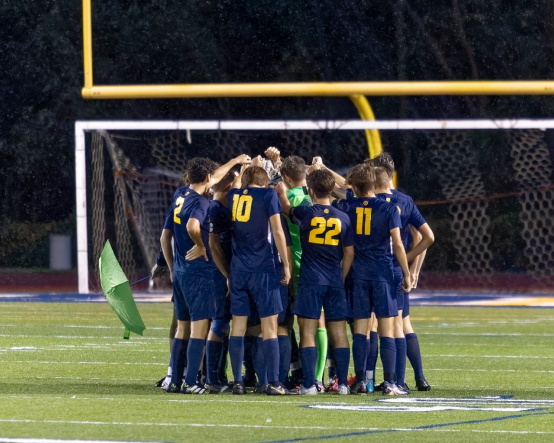

Nostalgia from High School Soccer
Shion LovelaceFall... Around this time, there is a special place in my heart where I remember the good old days of the high school soccer season. I imagine myself and the team playing on the pitch. We were laughing whenever things turned out well, sometimes frustrated when it didn't. We got through many tough times together and were like a family. I still to this day recall the memories I made during the four years of high school and its seasons. I can't believe that this was nearly three years ago. Actually, my soccer career started way back, but that's another story. There are too many favorite moments throughout the four years, and it's so hard to choose one. If I really had to choose one moment, it would be the district finals. This game is so important since it gives you the ticket to the round of 16 of the State of Michgan High School Tournament. Our school was in division 1 which made each game we faced a hard hurdle to jump. All we did was run as hard as we can and chase that ball so that we can strike it in the net. I barely had time to take a breath, but at the end it was all worth the struggle. We won the game. What's even better is that we were able to win district finals two years in a row, when I was a junior and a senior. I made a lot of memories and also learned many things. What I wanted to say this whole time is, 'life is full of obstacles, but in the end have fun.'
| Date | Opponent | Score |
|---|---|---|
| 10/10/2019 | Walled Lake Northern HS | 1-2 |
| 10/22/2020 | Milford HS | 2-0 |
| 10/20/2021 | Milford HS | 3-0 |
Final scores at District Finals between 2019-2021. I was a Sophomore, Junior, and Senior during this time.